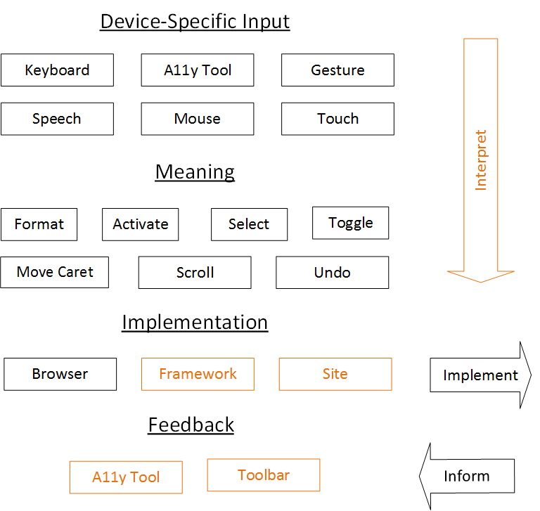

Visualizing Device-Independent Input
Today, Device-Specific Input must be interpreted by frameworks and sites. This means they have to directly handle all current and future forms of input, including keyboard, mouse, touch, gestures, speech, and more. Further, they have to handle internationalization for many of these methods. Frameworks and sites also have trouble changing browser behavior in some cases because there are no Device-Specific Edit Events for the built-in context menu, gestures, and more. Accessibility tools and toolbars also have trouble understanding what is site is doing because there is not a 1:1 mapping between Device-Specific Input and expected behavior across sites, and sites have no clear way to articulate what behavior has occurred. The following diagram shows this visually: Ideally, sites should have a more direct way of understanding what a user is trying to do. Additionally, Accessibility Tools and other input modalities should be able to understand what has occurred in order to provide feedback to users. This can be solved with Device-Independent Events, which allow a site to respond to a user's intention instead of the device-specific way they indicated that intention. The following diagram shows this improvement visually: